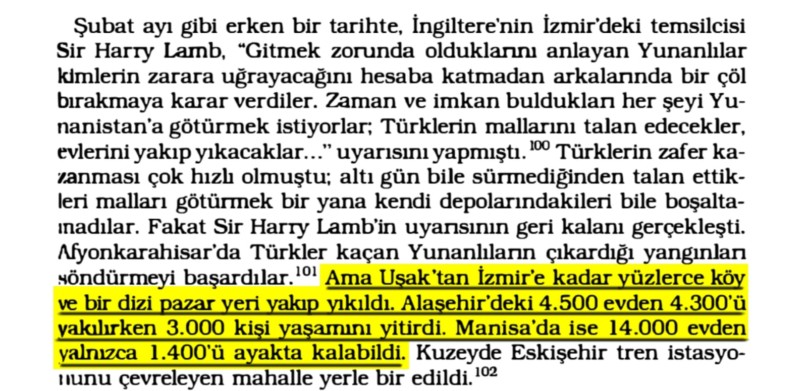
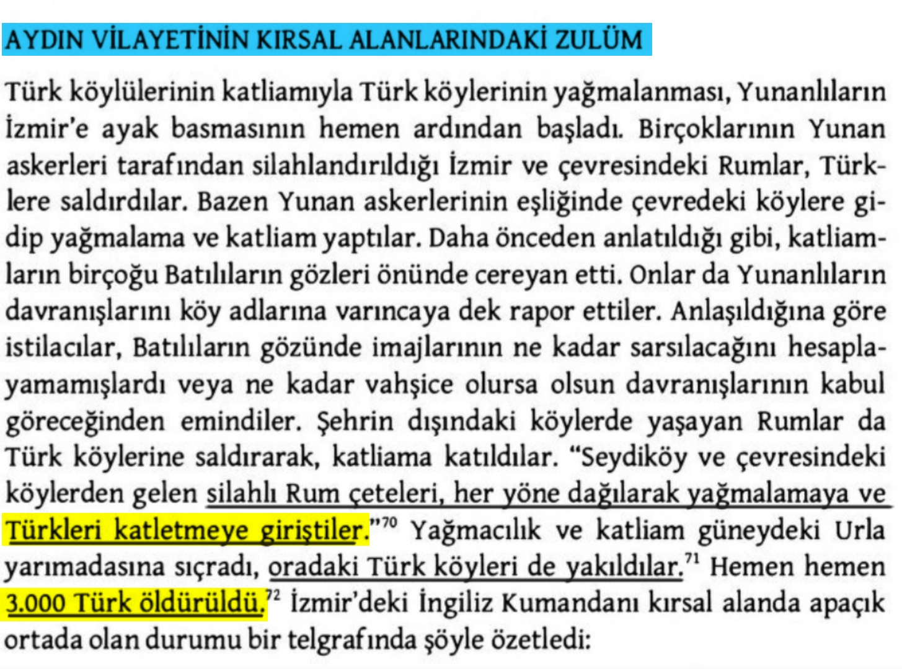
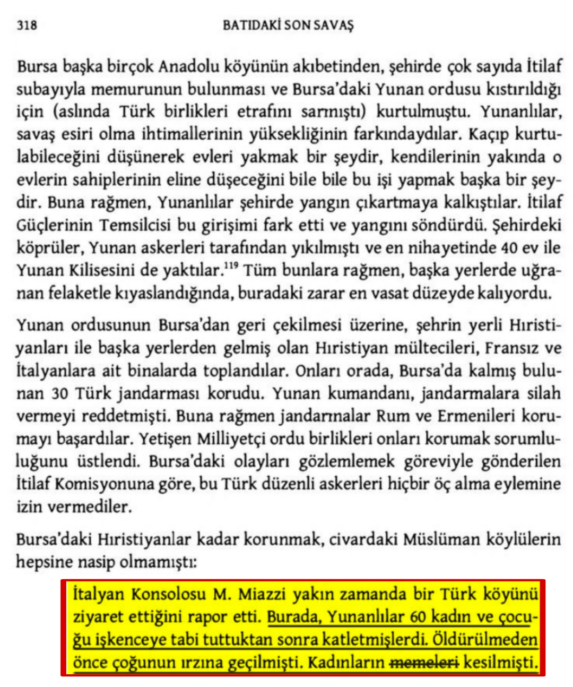
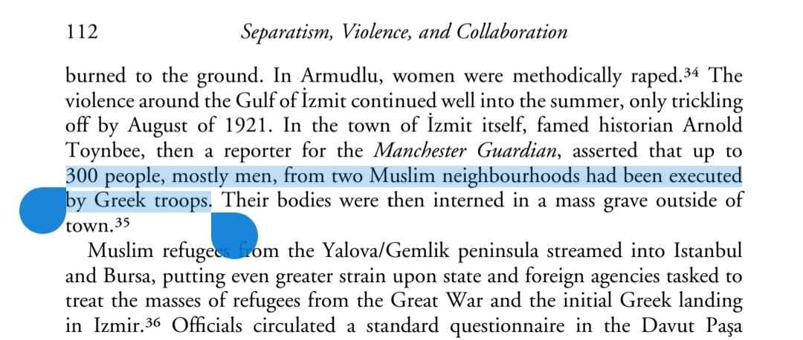
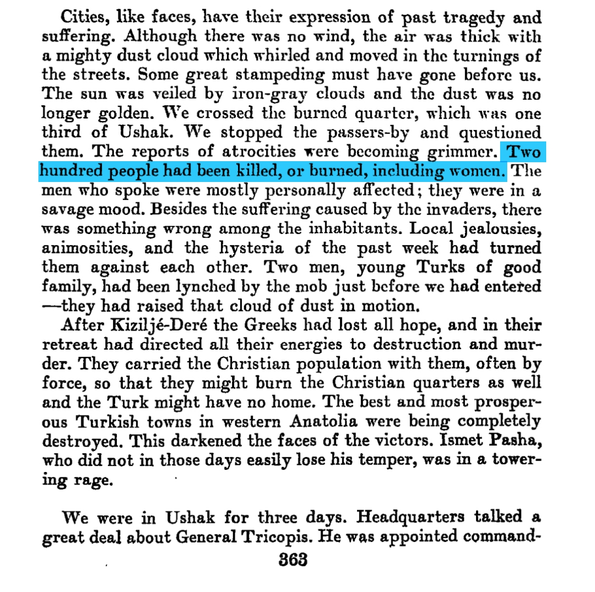
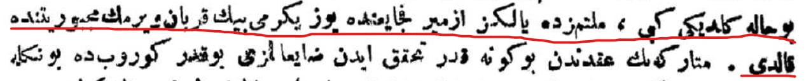

📌 *3000 kişi yanarak yaşamını yitirdi.*📚 Andrew Mango, Atatürk, s.333

📌 *Urla'da 3000 kişi yakılarak hayatını kaybetti.*📚 Justin McCarthy, Ölüm ve Sürgün, s.301

📌 ** İtalyan Konsolosunun Raporuna göre bir katliam!📚 Justin McCarthy, Ölüm ve Sürgün s.318

📌 ** İki Müslüman mahalleden çoğunluğu erkek 300 kişi Yunan askerleri tarafından infaz edilmişti.📚 Sorrowful Shores, Şiddet, Etnisite ve Osmanlı İmparatorluğunun Sonu, s.112

📌 *Kadınlar da dahil olmak üzere iki yüz kişi öldürülmüş veya yakılmış*📚 The Turkish Ordeal, Being the Further Memoirs Of Halide Edib s.363

📚 İrade-i Milliye Gazetesi, 14 eylül 1919, s.1
📌 **milletimiz de yalnız İzmir fecayi'inde yüz yirmi bin kurban vermek mecburiyetinde kaldı. **